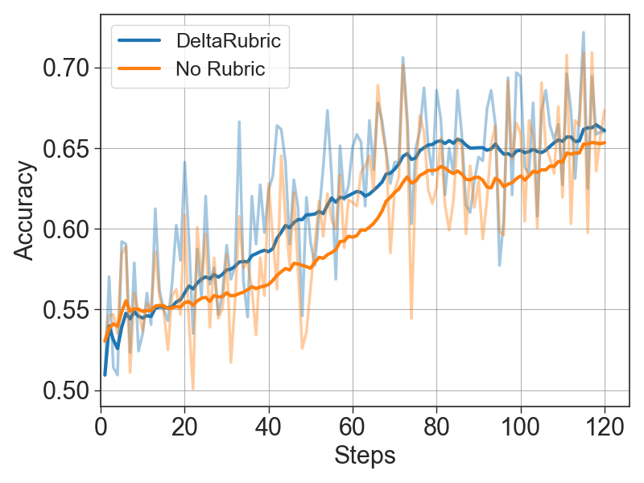
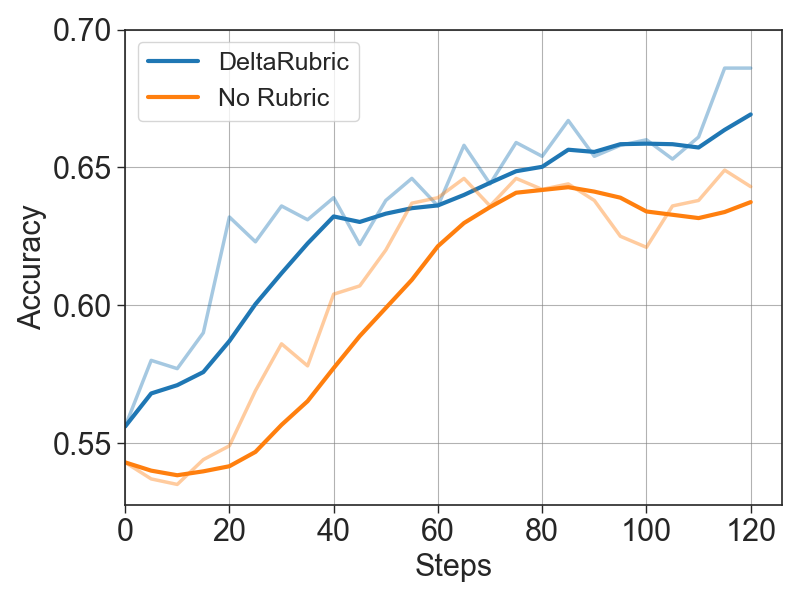
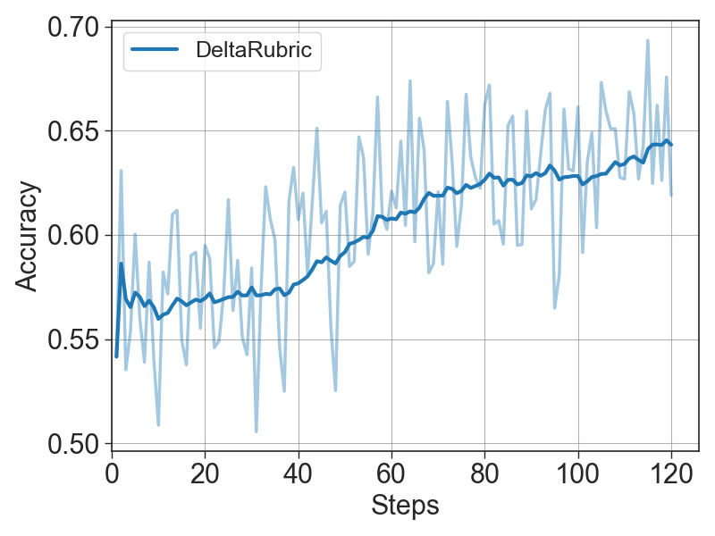
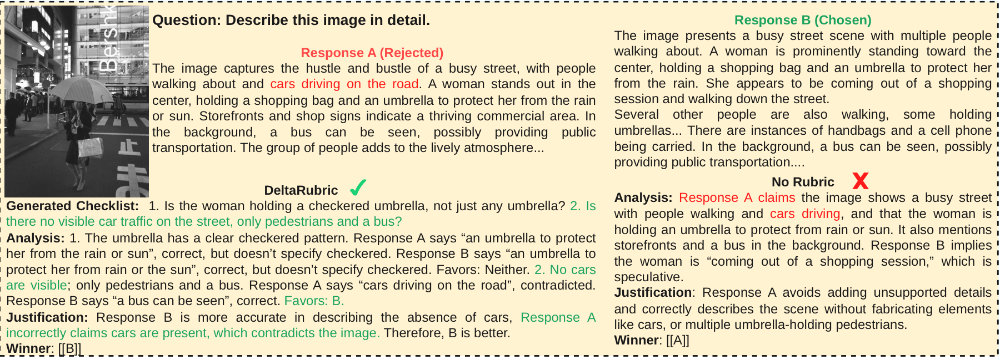
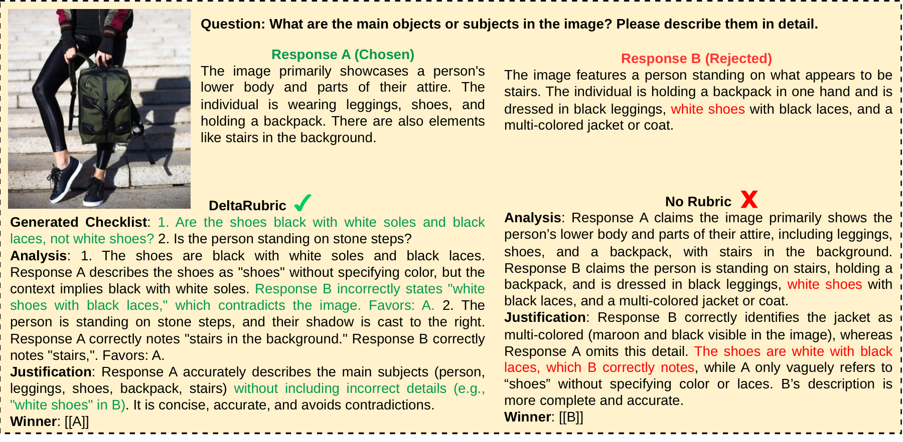
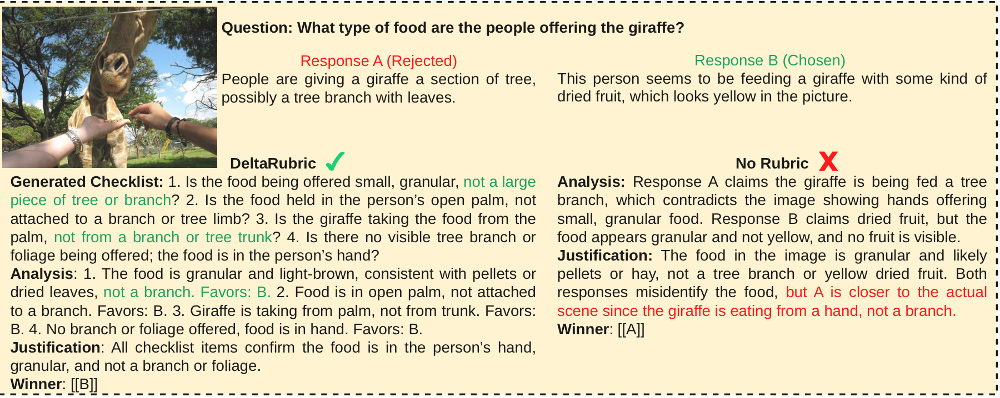
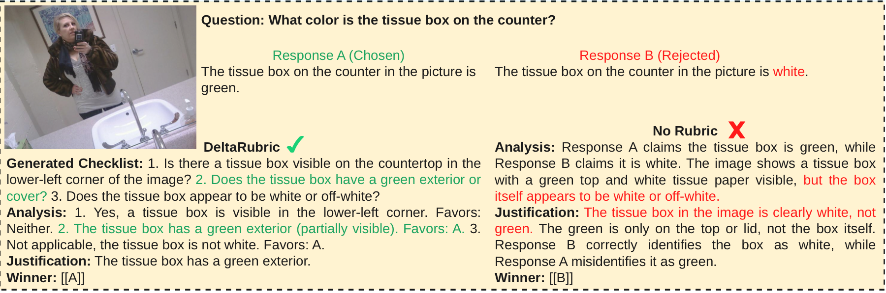

Aligning Multimodal Large Language Models (MLLMs) requires reliable reward models, yet existing single-step evaluators can suffer from lazy judging, exploiting language priors over fine-grained visual verification. While rubric-based evaluation mitigates these biases in text-only settings, extending it to multimodal tasks is bottlenecked by the complexity of visual reasoning. The critical differences between responses often depend on instance-specific visual details. Robust evaluation requires dynamically synthesizing rubrics that isolate spatial and factual discrepancies. To address this, we introduce DeltaRubric, an approach that reformulates multimodal preference evaluation as a plan-and-execute process within a single MLLM. DeltaRubric operates in two steps: acting first as a Disagreement Planner, the model generates a neutral, instance-specific verification checklist. Transitioning into a Checklist Verifier, it executes these self-generated checks against the image and question to produce the final grounded judgment. We formulate DeltaRubric as a multi-role reinforcement learning problem, jointly optimizing planning and verification capabilities. Validated on Qwen3-VL 4B and 8B Instruct models, DeltaRubric achieves solid empirical gains. For instance, on VL-RewardBench, it improves base model overall accuracy by +22.6 (4B) and +18.8 (8B) points, largely outperforming standard no-rubric baselines. The results demonstrate that decomposing evaluation into structured, verifiable steps leads to more reliable and generalizable multimodal reward modeling.
DeltaRubric trains a single shared MLLM to perform two complementary roles. The Disagreement Planner identifies concrete visual attributes, object counts, spatial relations, and hallucinated claims that distinguish two candidate responses. The Checklist Verifier then executes the generated checklist against the image and prompt before selecting the preferred response. Both roles are jointly optimized with multi-role reinforcement learning, using decoupled advantage estimates so that planning gradients reflect checklist quality while verification gradients reflect execution quality.



The training curves show that DeltaRubric improves both final response evaluation and intermediate checklist quality. The Planner's steadily rising probe accuracy indicates that generated checklists become increasingly decision-useful, aligning with the Verifier's higher training and validation accuracy.
DeltaRubric improves the overall accuracy of Qwen3-VL-4B and 8B Instruct base models by +22.6 and +18.8 points, respectively, and outperforms the standard no-rubric baseline across both architectures.
| Models | General | Hallucination | Reasoning | Overall | Macro Avg |
|---|---|---|---|---|---|
| Open-Source Models | |||||
| VITA-1.5-7B | 18.6 | 8.9 | 22.1 | 16.5 | 16.5 |
| SliME-7B | 7.2 | 27.1 | 18.6 | 19.0 | 17.6 |
| Molmo-7B | 31.1 | 31.8 | 56.2 | 37.5 | 39.7 |
| MM-RLHF-Reward-7B | 45.0 | 50.5 | 57.6 | 50.2 | 51.0 |
| InternVL2-8B | 35.6 | 41.1 | 59.0 | 44.5 | 45.2 |
| LLaVA-Critic-8B | 54.6 | 38.3 | 59.1 | 44.5 | 45.2 |
| Llama-3.2-11B | 33.3 | 38.4 | 56.6 | 42.9 | 42.8 |
| NVLM-D-72B | 38.9 | 31.6 | 62.0 | 40.1 | 44.1 |
| Llama-3.2-90B | 42.6 | 57.3 | 61.7 | 56.2 | 53.9 |
| DeltaRubric | |||||
| Qwen3-VL-4B Instruct | 46.4 | 64.9 | 36.0 | 54.9 | 49.1 |
| + No rubric | 51.9 | 87.1 | 50.8 | 73.2 | 63.3 |
| + DeltaRubric | 55.3 | 87.7 | 65.9 | 77.5 | 69.6 |
| Qwen3-VL-8B Instruct | 47.0 | 72.4 | 43.2 | 61.3 | 54.2 |
| + No rubric | 55.8 | 86.1 | 48.3 | 72.0 | 63.4 |
| + DeltaRubric | 59.7 | 88.3 | 72.6 | 80.1 | 73.5 |
DeltaRubric improves the Qwen3-VL-8B Instruct overall accuracy by +5.5 points over the base model and by +4.5 points over the no-rubric baseline.
| Model | Overall | General Correctness | General Preference | Knowledge | Math | Coding | Safety | VQA |
|---|---|---|---|---|---|---|---|---|
| Open-Source Models | ||||||||
| VITA-1.5-7B | 53.6 | 55.6 | 54.3 | 52.5 | 51.9 | 52.8 | 58.1 | 50.0 |
| Molmo-7B | 52.9 | 56.8 | 59.4 | 54.6 | 50.7 | 53.4 | 34.8 | 60.3 |
| MM-RLHF-Reward-7B | 67.1 | 61.7 | 67.5 | 54.3 | 58.4 | 57.9 | 92.9 | 76.8 |
| SliME-8B | 42.0 | 42.3 | 52.2 | 47.5 | 43.5 | 35.3 | 19.1 | 53.8 |
| InternVL3-8B | 63.6 | 59.6 | 61.6 | 60.5 | 65.1 | 56.6 | 59.3 | 82.3 |
| Llama-3.2-11B | 51.2 | 57.8 | 65.8 | 55.5 | 50.6 | 51.7 | 20.9 | 55.8 |
| Llama-3.2-90B | 61.2 | 60.0 | 68.4 | 61.2 | 56.3 | 53.1 | 52.0 | 77.1 |
| DeltaRubric | ||||||||
| Qwen3-VL-4B Instruct | 65.3 | 66.1 | 56.3 | 52.7 | 46.7 | 54.4 | 80.4 | 70.8 |
| + No rubric | 66.4 | 74.5 | 60.1 | 59.4 | 54.3 | 55.0 | 87.6 | 71.3 |
| + DeltaRubric | 69.1 | 73.7 | 65.4 | 60.0 | 58.0 | 52.0 | 91.2 | 80.8 |
| Qwen3-VL-8B Instruct | 67.7 | 68.9 | 61.5 | 56.2 | 64.6 | 49.6 | 82.6 | 71.4 |
| + No rubric | 68.7 | 75.0 | 62.7 | 56.7 | 64.0 | 51.5 | 91.5 | 77.0 |
| + DeltaRubric | 73.2 | 76.9 | 65.9 | 69.5 | 68.7 | 52.6 | 93.3 | 84.9 |




@article{liu2026deltarubric,
title={DeltaRubric: Generative Multimodal Reward Modeling via Joint Planning and Verification},
author={Liu, Rui and Yu, Dian and Liang, Zhenwen and Shi, Yucheng and Zheng, Tong and Dai, Runpeng and Mi, Haitao and Tokekar, Pratap and Leoweiliang},
journal={arXiv preprint arXiv:2605.09269},
year={2026}
}